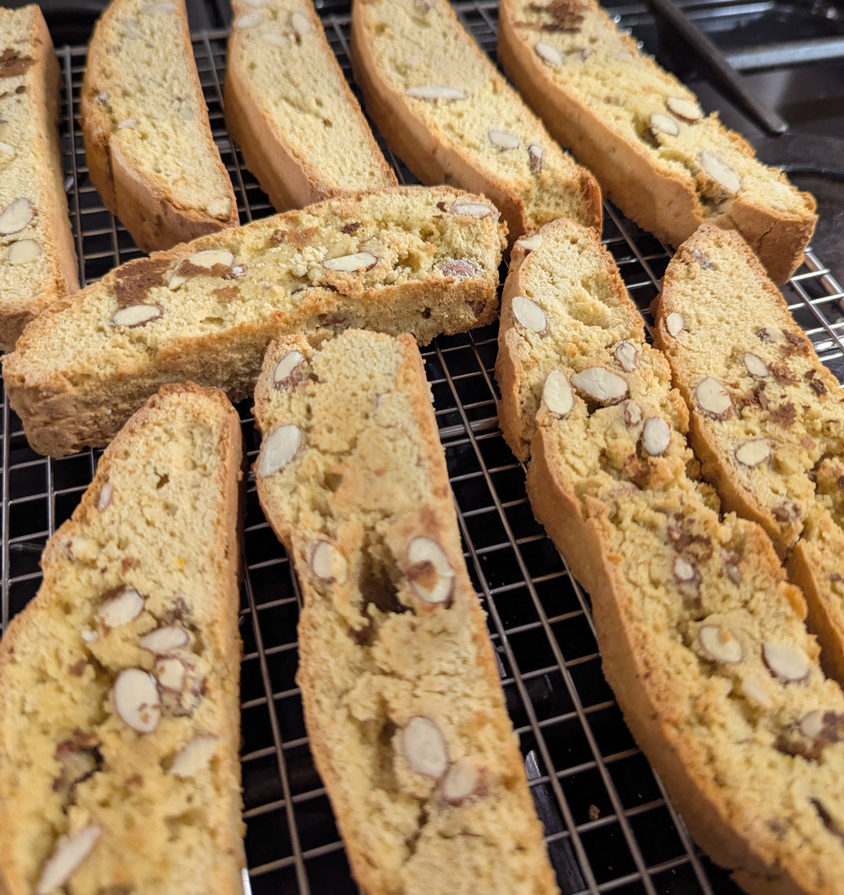

Cantucci (Italian Almond Biscotti)
 Vegetarian/Vegan
Vegetarian/Vegan
Full of almonds and baked twice for a perfect crunch

2 cupplain flour 001/4 cupwholemeal flour3/4 cupcaster sugar2large eggs1/2lemon, zested1/2orange, zested1 tsphoney1 tspbaking powder1 tspvanilla extract2-3 dropslemon or orange extract1 cupalmonds, unblanched, raw & whole1/2 tspsalt
Preheat the oven to 350°F (180°C). Line a baking tray with parchment paper.
Beat the eggs and sugar together, then mix in the vanilla, honey, any extracts, and citrus zest.
In a separate bowl, whisk the flours, baking powder, and salt, then combine with the wet ingredients.
Optionally roughly chop half the almonds and leave half whole. Fold almonds into the mixture.
Shape the dough into logs - if very sticky use clingfilm but remove before baking. Place the dough on the baking tray, and flatten slightly.
Bake 20–25 minutes until lightly golden. Remove from the oven for 10 mins to cool slightly
Lower oven temp to 325°F (160°C).
Transfer logs to a cutting board and cut into 1cm width slices with a sharp knife - a serrated bread knife is best.
Return slices to the tray cut-side up and bake for 10 mins. Turn over on the tray and bake for a further 4–6 minutes until golden and crisp on both sides.
Eat warm for a softer biscuit or leave to cool for a crunchier texture.